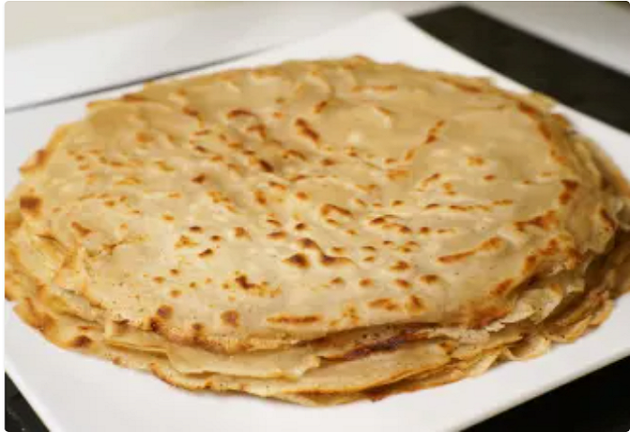
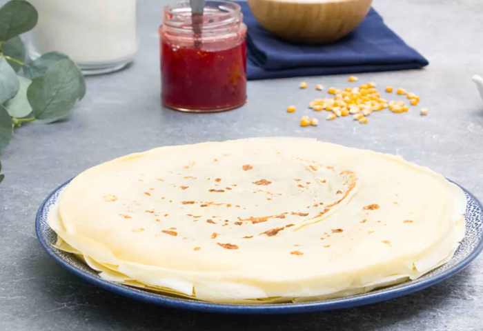

Dans un saladier à l'aide d'une cuillère en bois ou dans le bol
d'un robot, mélanger la farine avec le sucre puis ajouter les
oeufs progressivement un à un.
Ajouter le lait petit à petit en mélangeant et veillant à ne
laisser aucun grumeaux.
Ajouter ensuite le beurre fondu au reste de la préparation puis
bien mélanger.
Ajouter les arômes : le rhum et la vanille.
Dans une poêle bien chaude, faites sauter vos crèpes.
Crèpes véganes

Ingrédients
Pour 12 crèpes environ
30 g de Fécule de maïs
650 ml de lait de soja
300 g farine de blé
50 g de sucre
1 CaS d'huile neutre
1 pincée de sel
Arome de Fleur d'oranger
Préparation
Pâte à crêpes : Mets la farine, la fécule, le sucre, le sucre
vanillé et la pincée de sel dans un saladier et mélange tout.
Verse le lait de soja progressivement en mélangeant rapidement
avec un fouet.
Dès que ta pâte est liquide, ajoute le rhum ou l'eau de fleur
d'oranger et la cuillère à soupe d'huile.
Tu peux ajouter un peu d'eau pour rendre la texture
vraiment fluide. Si tu as un peu de temps, laisse ta pâte
reposer une heure environ. Fais chauffer ta poêle légèrement
huilée à feu vif.
Verse une louche de pâte et recouvre la poêle avec.
Décolle la crêpe avec une spatule en vérifiant qu'elle soit
suffisamment dorée. Pour les autres crêpes, fais les cuire
sur feu moyen.
Crèpes sans gluten

Ingrédients
Pour 16 crèpes environ
110 g de Fécule de maïs
500 ml de lait
90 g farine de riz
2 Oeufs
30 g de beurre
1 CaS d'huile neutre
1 pincée de sel
2 CaS de Rhum
Préparation
Fouettez les oeufs avec l'huile puis incorporez la farine, la
Maïzena et le Rhum. Délayez avec le lait et mélangez bien
jusqu'à l'obtention d'une pâte lisse.
Si des grumeaux se forment, mixez la pâte quelques minutes.
Laissez reposer au moins 1 heure.
Chauffez une poêle ou une crêpière et déposez-y une noix de
beurre. Dès qu'il a fondu, versez une louche de pâte et
étalez-la uniformément sur la surface de cuisson afin de former
une belle crêpe.
Dès que la crêpe commence à sécher (1 minute maximum),
retournez-la en la faisant sauter ou plus simplement à la
spatule.
Une fois retournée, saupoudrez la crêpe d'un peu de sucre et
passez un petit morceau de beurre sur la surface pour éviter que
la crêpe ne soit trop sèche..